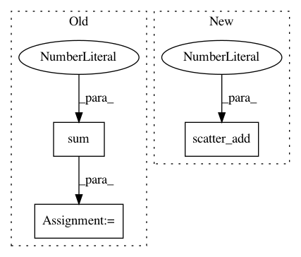

d83b62938607378a935bf657d782ded941f1577c,torch_geometric/transforms/gdc.py,GDC,_transition_matrix,#GDC#Any#Any#Any#Any#,95
Before Change
diag_idx, D_vec_inv,
num_nodes, num_nodes, num_nodes)
elif normalization == "row":
D_vec = torch.sparse.sum(sp_adj_matrix, dim=1).to_dense()
D_vec_inv = 1 / D_vec
edge_index, edge_weight = spspmm(diag_idx, D_vec_inv,
edge_index, edge_weight,
num_nodes, num_nodes, num_nodes)
After Change
num_nodes, num_nodes, num_nodes)
elif normalization == "col":
_, col = edge_index
D_vec = scatter_add(edge_weight, col, dim=0, dim_size=num_nodes)
D_vec_inv = 1 / D_vec
edge_index, edge_weight = spspmm(edge_index, edge_weight,
diag_idx, D_vec_inv,
num_nodes, num_nodes, num_nodes)
In pattern: SUPERPATTERN
Frequency: 3
Non-data size: 3
Instances
Project Name: rusty1s/pytorch_geometric
Commit Name: d83b62938607378a935bf657d782ded941f1577c
Time: 2019-11-22
Author: klicpera@in.tum.de
File Name: torch_geometric/transforms/gdc.py
Class Name: GDC
Method Name: _transition_matrix
Project Name: rusty1s/pytorch_geometric
Commit Name: 3b66ade462ac29a13daf707dc08222da7d303e69
Time: 2018-12-15
Author: matthias.fey@tu-dortmund.de
File Name: torch_geometric/nn/glob/set2set.py
Class Name: Set2Set
Method Name: forward
Project Name: rusty1s/pytorch_geometric
Commit Name: d83b62938607378a935bf657d782ded941f1577c
Time: 2019-11-22
Author: klicpera@in.tum.de
File Name: torch_geometric/transforms/gdc.py
Class Name: GDC
Method Name: _diffusion_matrix_approx